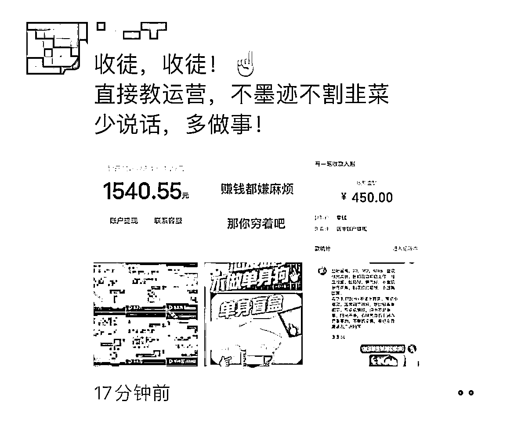

来源：https://uklrrqhpyq.feishu.cn/docx/DkjcdcP8FoZBnJx5hp2ckBffnoe
大家好，我是乔橘，一起生财有术~
毕业于一家野鸡专科大学，学的数字媒体，一毕业就被腾讯录取，我是个什么都会一点但执行力爆表的人。
接下来复盘和分享一下我22年11月-23年1月做盲盒整个项目的分享~
复盘更多的是放大思路，希望对大家有帮助~
为年轻人提供的线上交友平台，通过抽取盲盒内的”纸条“获取用户的联系方式达成线上社交交友的目的。
a1：一张桌子，桌上摆着两个箱子，分别装有男生和女生的交友纸条，然后以收费的形式。可以进行，只需要花一块钱就可以，“放”自己的纸条、“抽”别人放的纸条，简单搭建起一个“街头月老办事处”。纸条的内容，就是男女生们的交友要求以及自己联系方式。没错这个项目需求，就是现阶段单身人群太多了。
a2：我国单身成年人高达2.4亿，那这么大的单身市场能挖掘出什么需求呢?
通过这数据可以挖掘的项目太多了。如：(同城相亲，情感咨询)随便一个能深耕细挖做好了，利润都是百万起步的。
而对于盲盒交友，线下虽然火，但每个地区流量始终有限。但线上就不一样了，全国几亿的网民，都能覆盖到。所以上个星期就有想开发做一个线上版盲盒交友的朋友来找我聊了。能不能把这个火爆抖音的盲盒交友玩法搬到线上来?那晚聊的很嗨，互相交流出了很多火花。两天时间不到，那边就开发上线了线上盲盒交友平台。一上线不出所料，收入直接就爆炸了。（以上数据来源于网络）
通过某音and快手平台引流到私域，通过“盲盒”线上社交平台消费获取分佣，用户消费1r，红娘最高可获得0.9r，平台获得0.1r。
玩法1：平台是一个抽纸条的玩法，抽一次纸条1-2r左右，有五连抽，十连抽优惠价的玩法。
玩法2：用户可以付费进”脱单交友群“，
玩法3：用户可以成为代理去分销
以下是平台的截图
平台1
平台2
聊天记录对话+女生照片
视频纯自然流的打法，流量非常好，基本上一发就爆
视频就不方便放出来了，涉及女生照片肖像权
引流方式
1：账号简介放微信
2：作品的边边角角放直接放微信
3：通过@小号留联系方式
这个项目在现在看来已经没那么好做了
以下分享我从0-1，快速放大引爆风口，快速把收益拉满的一些思路
全程高能无尿点哈哈
这个项目我是怎么发现的呢？
有一天我在刷朋友圈的时候，看见以前一个学音乐的学长发了一条朋友圈广告
内容图片如下（翻相册这张图找了我半个小时）

在他发的这几张图片里面我发现了几个点
1：账号虽然打码了，但是可以看见只发了七八条作品左右，初步可以判断账号没做多久，他也是刚开始做的
2：里面的作品虽然打码了，不过还是有几个标签没有被打码
我们用请教的方式，或者直接上去问这个项目怎么做，肯定逃不掉被收费的环节
所以如果要跟对方平等交流建立沟通的方式，自身必须 ”有点东西“
直接去抖音搜索他朋友圈里面出现仅有的几个关键词
很快，我就通过，红娘，盲盒，线上交友，这几个关键词搜到了一个对标账号
二话不说，我直接实操开始起号
第三天，效果如下
拿到了一些数据之后，再去建立联系
如下：
回到前面分析的点，对方可能是个新手刚做没多久，肯定缺一些一起沟通的人，抓住了对方心里
用交流的方式去沟通，立马对方就把我拉进了一个群，他们做这个项目的一些朋友，（成功进入圈子）
如果我一开始是这样
如下：
那么我肯定被大卸8块，怒冲800，直接付费...

进入圈子群之后里面有8个人，我发现里面的人，平均收益大概每天再100-200左右，
他们都在自己做账号没有放大去做，我刚开始也是如此
这个模式跑通后我不断复制，群里的那些人已经被我弯道超车了
后面我从1个抖音，2个抖音，一直到7个抖音，收益也从每天100+，到每天1000+左右
逐渐的，我发现已经开始放不大了，一个人的力量顶天也只能做10个账号
剪辑发布，引流到微信通过好友，做私域转化，步骤很多
复盘前面的内容后
我调整了以下，除了放大其次还可以做精细化运营
前面提到的2个盲盒平台的平台方，其实他们也有在做引流的，但是我发现他们私域转化特别低，
引流过来的用户平均客单价1-2块钱左右，问题出现了我立马去解决
几天的时间摸清了他们的模式后，我发现2个关键问题点
1：从抖音引过去的用户到他们的微信后，话术存在问题（纯广告）
2：朋友圈内容纯广告，无吸引力
这里简单的列一下用户属性
用户画像，男性，18-25
用户痛点，交友属性强烈，喜欢漂亮的女生
问题全部列出来后一下就明了了。
1：朋友圈的广告变成（广告海报+漂亮的女生照片）
2：加过来的粉，直接私信无广告，主要通过朋友圈来成交，
（用户一加过来看到广告立马删掉了，用户是很讨厌广告的）
3：年轻的用户群体很喜欢网络用语，比如：绝绝子，天花板，yyds等...这些词我经常会用到朋友圈
让朋友圈更有趣，不要让用户加过来觉得你是个官方广告号，不然秒删...
以上几个小小的调整，从平均客单价1-2r，上升到5-8r
后面，那些平台方和同行全部模仿我的这种方式去做了....

1：放大
2：提高转化率
提高转化率已经搞定了，接下来我就要去放大这个项目了
怎样放大呢？
我经常说的一句话，（中国不缺货源，先搞定流量）
1：招代理
2：教学做项目培训
3：找代发
4：布局私域
围绕上面4个点出发
第一步我从2个渠道去做裂变
a1：朋友圈已有的资源去招代理，做冷启动
a2：通过第三方平台做广告投放
第一期招代理我是免费的
教他们怎么做引流，因为平台是有分销机制的，代理的收益我是能拿到20%的
方案出来了，接下来就是解决问题了
招过来的代理都是我朋友圈以前的朋友或者其他行业的人
以前是没做过这种网创类型项目的，执行力低，不太了解这些步骤，
交付时间成本高，而且效果不是很好我这边的收益并不高
第1期持续了一周左右，我直接NO PASS掉了
第1期就当是做环节的测试，跑通教学的步骤，和每个环节的细节点
总结了以上经验，我列出了分析了这种代理不是我的精准用户
我需要的是创业粉。
我现在已经跑通了项目每个环节而且有结果了，我开始引流创业粉
通过各大做项目的人在他们朋友圈投放我的项目广告，平均一条广告价格在300-600左右
我的教学陪跑客单价是288r，一次广告只要有2个客户成交我必回本，按照电商投放逻辑，只要不亏无限投
筛选后找了几个人投放之后，平均投放一次广告能加到25-50人左右，平均转化在6个人左右
算账算明白了之后，我无限投，因为”根本不亏“
另外我还在一些网络创业平台去投稿，做好海报之后，我开始录制课程教学（只讲大框架，细节不讲）
2个好处
1：创业粉按照我的课程去做了，成为我的代理我能拿到20%
2：另外一些需要教学陪跑的创业粉，采取付费陪跑的形式
10天左右，通过创业平台微信引流了大概1000多个创业粉
以上2种方式同时进行，一个月引流了大概5000个创业粉
引流效果非常好的情况下，还是会遇到一个问题，无法放大收益
因为一天几十个学员，很难做到”完美交付“而且时间成本高
交付好了我的那20%的分销收益是很可观的
为了做到降本增效
接下来我开始用
私域转化的核心玩法：逼单+提高客单
因为我意识到这个项目现在我在网上无限收学徒，很快风口就会逐渐消失
所以我用一天学费涨价100的方式，逼单，提高客单价，降本增效
效果反馈很好，在观望的创业粉都开始报名加入。
转化的过程中还有个细节点就是，我转化用户基本上都是用语音给客户沟通的
能大大提高客户的信任度，和戒备心。

这里我想到了我之前看过的一本书，《产品之核》
好像是这本，我看过很多关于产品和知识付费的书不记得是不是这本了
里面提到一个点，产品可以用很多方式去呈现，但核心是不变的
你可以无数次通过不同的包装去卖给用户，
可口可乐和百事可乐的区别就是不同的人去卖，但卖的还是可乐
（原话不记得了，大概是这样）
我开始打造人设
1：前腾讯媒介部核心导师1对1教学陪跑
2：5年网创经验导师带你一起”生财有术“（举个例子哈哈）
3：加入即可进入导师的专属”网创圈子“
...等等
人设打造出来之后去推广我发现，那段时间报名的人还是跟以往一样的多
效果反馈表面上效果不大，潜在的效果应该是有的，也有可能用户其实已经看过太多这种案例了
对于这种人设打造已经开始不感冒了。
接下来我更新个海报，更新迭代了一下玩法，其实是换汤不换药的
在同一个渠道，同一种方式，第二次推，效果是第一次推的50%左右
但是效果还是很不错的，因为产品在这个阶段已经被验证过效果
已经没有实际成本了，不断的迭代去推，怎样都是纯赚的。

以上优化了很多步骤，人设打造，私域转化，二次引流
这些都是教学的板块的迭代和更新，基本上已经放大的差不多了
基本盘，自己引流的那7个账号，该怎么放大呢？
代发就是用别人的号帮我们发作品，引流到我们自己的微信
老规矩，列出需要解决的问题
1：大量剪视频产出内容
2：找兼职粉
3：测试跑通流程
我开始找了3个兼职粉，以3-5r一条作品发布到他们的账号去代发，引流微信填我这边的
不出意外效果非常好，跑通流程之后就是放大了
这个时候我已经没有很多时间去做这件事情了
ps：永远不要让自己成为工具人，重复劳动一定要交给别人去做
所以我找了个人线上办公，一个月开1000的底薪+成交额的40%
一个月时间：成交额13988r
那段时间口罩原因刚开放，很多人都开始羊了
那段时间有半个月是没有引流的，因为那个时候口罩原因大家都同时羊了
如果一个月都在引流的话算下来一个月成交额应该有3w左右
羊了之后刚恢复已经开始快要过年了.....
随着网络的不断传播裂变，做的人开始爆发式增量，平台开始管制
项目逐渐开始走下坡路，利润直线下滑....
总结下整个项目的数据

还有几个号后台关闭了，没有截图到，大概收益在8w左右
另外教学部分在15w左右
一个人，一个月23w

1：流量
雷军说的一句话挺有道理的：
站在风口上猪都会飞，这场游戏的核心一定是流量，年轻化的社交小程序搭配年轻化的平台（某音），社交属性完全吻合，流量必然是爆的，复盘整个转化路径从引流-私域-小程序，因为客单价低，（数量够！并不需要质量。）
2：私域
从引流到私域，引流固然重要，私域也得维护好，进到私域的全都是社交属性的用户，想要用户消费就要对症下药，主要成交方式通过朋友圈去成交一定得精准打击直戳痛点
3：交友盲盒的终局是什么？
消费者“好奇+抽奖”心态商家设置的限量版与隐藏款，是吸引人购买盲盒的原动力。不管什么产品，只要打上限量两个字就一定会使部分人变得冲动。
随着线上各种社交盲盒的诞生，没有条条框框的条例管制野蛮生长，平台质量直线下滑，真正的实现社交寥寥无几，而且不断衍生出各种违规广告出现。
没有合理的管制用户体验永远停留在前几次消费，导致用户的消费只会停留在”新鲜感的盲盒初期“，体验差！不可持续性是整个盲盒的终局，其实前几次消费其实已经够各大平台吃饱了，用户基数太多了。
q1：平台不受严厉管制且质量差的社交盲盒平台，在质量差的情况下且能赚的盆满钵满
q2：用户在新鲜感和猎奇心理中享受刺激的游戏体验，随着质量差消费逐渐下滑
可能很多人好奇，我做这么大为什么不开平台？
如果你是个人：为什么你不开平台？,每个项目都讲究投产比，合理的投入产出相对合理的收益。
a1：开平台：平台搭建，域名维护，售后处理，代理引流，代理提现
a2：不开平台：引流
如果我那个时候开了平台的话，收益可能已经减半了
蛇吞象的事情不建议去做，平台让利9成完全可以只做引流，平台要做的事情其实量一但大起来远远比引流多

现在手上现在有5000+的创业粉了，直到现在都不断有人加到我
因为我之前在付费引流的时候就思考到了这个项目一定是短平快，想要长期的话一定要提前布局
当时引流有大部分都是留了钩子的，比如全国统一的引流大法：加我领资料
这批创业粉可以让我在下一个项目无缝衔接，接下来要做的是裂变！
我是乔橘，才疏学浅，多多指教。
欢迎链接，我的微信:sup7718
一起生财有术~